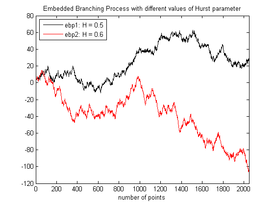

| FRACLAB Functions |
|
Generates a Self Similar process using an Embedded Branching Process
EBP = ebpsimulate(N,H)
EBP = ebpsimulate(...,'Propertyname',Propertyvalue)
EBP = ebpsimulate(N,H) Generates the self similar process, EBP, using a sample size, N, a Hurst parameter, H. The parameter N is a positive integer and H is a real in (0,1).
EBP = ebpsimulate(...,'Propertyname',Propertyvalue) Generates the self similar process, EBP, applying the specified property settings. The property setting can be choosen from the list below :
| Property | Purpose |
|---|---|
| 'maxvar' |
The EBP is computed using a specific maximum variation parameter, M, which is a positive integer. |
| 'seed' |
The EBP is computed with a specific random seed, SEED. This is useful to generate the same path several times or to compare the paths of different EBPs. |
N = 1024; H = 0.5; t = linspace(0,1,N);
ebp = ebpsimulate(N,H);
figure; plot(t,ebp);
title('Embedded Branching Process with H = 0.5'); xlabel('time')
N = 2048; H1 = 0.5; H2 = 0.6;
ebp1 = ebpsimulate(N,H1,'seed',10);
ebp2 = ebpsimulate(N,H2,'seed',10);
figure; plot(ebp1,'k'); hold on; plot(ebp2,'r');
legend('ebp1: H = 0.5','ebp2: H = 0.6','Location','NorthWest');
title('Embedded Branching Process with different values of Hurst parameter');
xlabel('number of points');xlim([0 N])

N = 2048; H = 0.5;
ebp1 = ebpsimulate(N,H,'seed',10);
ebp2 = ebpsimulate(N,H,'maxvar',5,'seed',10);
figure; plot(ebp1,'k'); hold on; plot(ebp2,'r');
legend('ebp1: maxvar = 0','ebp2: maxvar = 5','Location','NorthWest');
title('Embedded Branching Process with different values of maximum variation');
xlabel('number of points');xlim([0 N])
[1] Owen Dafydd Jones "Fast, efficient on-line simulation of self-similar processes; Corrected version",(2004).
| |
dla | empiric_g | |